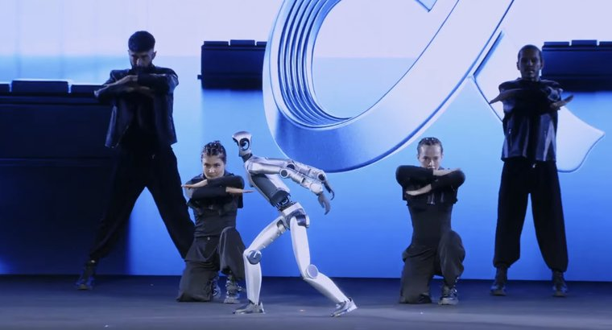
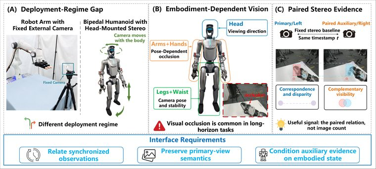
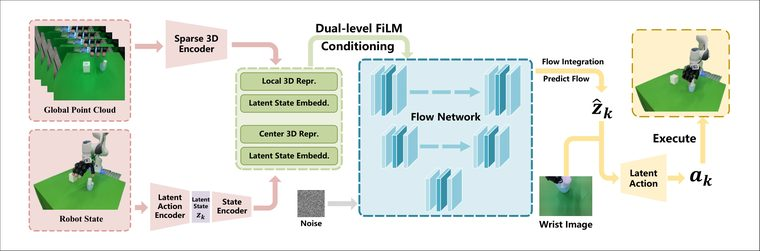
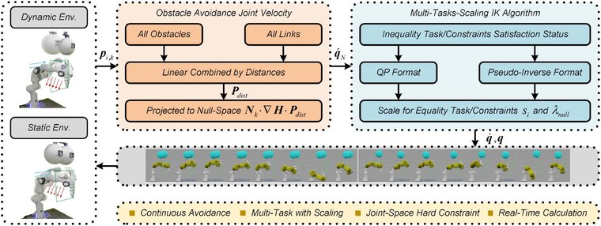
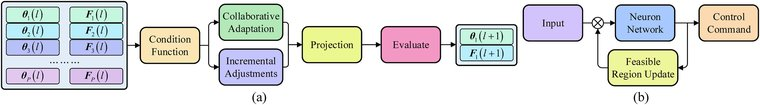
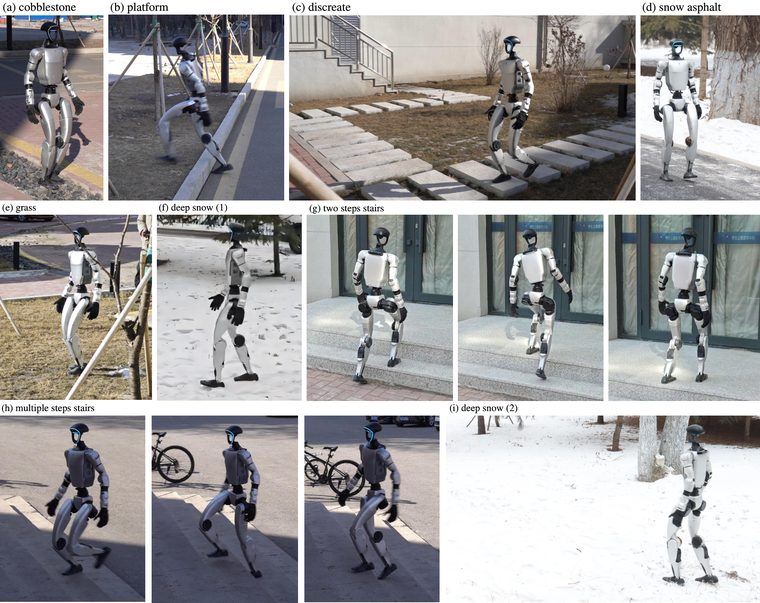
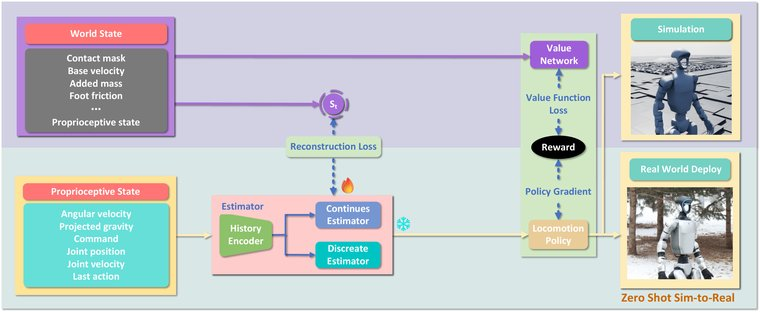
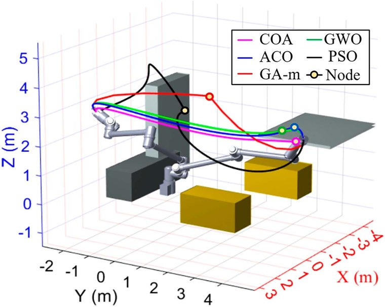
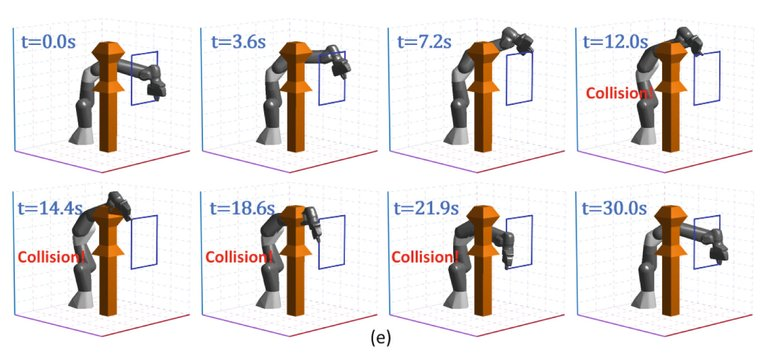

Wandong (Jim) Sun孙万东
Humanoid locomotion & loco-manipulation · Robot learning
I am a final-year PhD student at Harbin Institute of Technology, advised by Prof. Zongwu Xie. I make humanoid robots learn to walk, see, and work in the real world.
I am currently with the HONOR Robotics team as a core contributor to its humanoid robots, which debuted at MWC 2026 in Barcelona, won the 2026 humanoid half-marathon, and broke three human world records at the 2026 World Humanoid Robot Games.
I also created LeggedLab, an open-source RL workflow for legged robots.
Collaborations and conversations are warmly welcome.
Highlights
News
- [08/2026]HONOR's humanoid robot Lightning breaks the human 100 m, 400 m and 1500 m world records at the 2026 World Humanoid Robot Games.
- [04/2026]HONOR's humanoid robot Lightning wins the 2026 Beijing E-Town Humanoid Robot Half-Marathon: 21 km fully autonomous in 50:26, breaking the human half-marathon world record.
- [04/2026]Now You See That is accepted to RSS 2026.
- [03/2026]The perceptive terrain traversal behind Now You See That stars in an official HONOR film.
- [03/2026]HONOR unveils its first humanoid robot at MWC 2026 in Barcelona.
- [02/2026]Now You See That, end-to-end humanoid locomotion from raw pixels, is released on arXiv with a project page.
- [01/2026]CoLA-Flow Policy is accepted to RA-L 2026.
- [07/2025]ULC, a unified fine-grained controller for humanoid loco-manipulation, is released on arXiv with a project page.
- [06/2025]Learning Perceptive Humanoid Locomotion over Challenging Terrain is accepted to IROS 2025.
- [03/2025]LeggedLab is fully open-sourced: now 600+ GitHub stars and verified on real Unitree G1/H1.
- [03/2025]Perceptive humanoid locomotion over challenging terrain is on arXiv: 2 km of continuous real-world terrain without intervention.
- [02/2025]World Model Reconstruction for blind humanoid locomotion is on arXiv, including a 3.2 km snowfield hike.
Industry Projects
Beijing · 08/2026
At the 2026 World Humanoid Robot Games (666 teams from 16 countries), HONOR's humanoid robot Lightning broke the human world records for the 100 m (8.94 s), 400 m (39.45 s) and 1500 m (2:30.22), reaching a top speed of 14.5 m/s.
Beijing · 04/2026
HONOR's humanoid robot Lightning won the humanoid half-marathon: 21.0975 km fully autonomously in a net 50:26, breaking the human half-marathon world record, with HONOR robots sweeping the top six places.
Xinhua/ People's Daily/ Sixth Tone/ HONOR official page/ CCTV video

Barcelona · 03/2026
HONOR became the first smartphone maker to enter consumer humanoid robotics. On the MWC keynote stage the robot danced with human performers, moonwalked, backflipped, and runs at up to 4 m/s.
Shenzhen · 03/2026
Official HONOR film featuring perception-driven traversal of rubble, stairs, and obstacles, powered by the vision-based locomotion research behind Now You See That.
Publications

arXiv 2026
arXiv/bibtex
@article{wu2026eatrstereo,
title = {EATR-Stereo: Embodiment-Aware Token Routing of Paired Stereo Evidence for Humanoid Vision-Language-Action Control},
author = {Wu, Songwei and Zhao, Rui and Yang, Fan and Nie, Zhongqiang and Jiang, Zhiduo and Sun, Wandong and Li, Yuwei and Hu, Jian and Liu, Yang and Liu, Hong},
journal = {arXiv preprint arXiv:2608.17453},
year = {2026}
}
RSS 2026
project page/ arXiv/ code/ video/ bibtex
High-fidelity depth-camera simulation, vision-aware behavior distillation, and multi-critic rewards let a humanoid climb stairs, cross gaps, and walk over rubble, end-to-end from raw pixels.
@article{sun2026nowyouseethat,
title = {Now You See That: Learning End-to-End Humanoid Locomotion from Raw Pixels},
author = {Sun, Wandong and Su, Yongbo and Huang, Leoric and et al.},
journal = {arXiv preprint arXiv:2602.06382},
year = {2026}
}

RA-L 2026
@article{wu2026colaflow,
title = {CoLA-Flow Policy: Temporally Coherent Imitation Learning via Continuous Latent Action Flow Matching for Robotic Manipulation},
author = {Wu, Songwei and Jiang, Zhiduo and Sun, Wandong and Xie, Guanghu and Zhao, Rui and Liu, Hong and Liu, Yang},
journal = {IEEE Robotics and Automation Letters},
year = {2026},
doi = {10.1109/LRA.2026.3710367}
}

IEEE TIE 2026
IEEE/bibtex
@article{zhou2026taskscaling,
title = {Achieving Safety-Aware and Efficient Robot Motion via Dynamic Task-Scaling: From the Null-Space Control Perspective},
author = {Zhou, Xiaokai and Ma, Boyu and Cao, Baoshi and Liu, Yang and Sun, Wandong and Yang, Jianfei and Xie, Zongwu},
journal = {IEEE Transactions on Industrial Electronics},
volume = {73},
number = {4},
pages = {5734--5745},
year = {2026},
doi = {10.1109/TIE.2025.3610739}
}
arXiv 2025
project page/ arXiv/ code/ bibtex
A single unified policy delivers fine-grained loco-manipulation control (sequential skill acquisition, residual action modeling, and CoM tracking), outperforming hierarchical decompositions on a real Unitree G1.
@article{sun2025ulc,
title = {ULC: A Unified and Fine-Grained Controller for Humanoid Loco-Manipulation},
author = {Sun, Wandong and Feng, Luying and Cao, Baoshi and Liu, Yang and Jin, Yaochu and Xie, Zongwu},
journal = {arXiv preprint arXiv:2507.06905},
year = {2025}
}

RA-L 2025
IEEE/bibtex
@article{xie2025enhancing,
title = {Enhancing Safety and Manipulability of Redundant Manipulators: Accelerated Motion Generation in Dynamic Environments},
author = {Xie, Zongwu and Li, Mengfei and Sun, Wandong and Cao, Baoshi and Liu, Yang and Wang, Zhengpu and Ji, Yiming and Liu, Hong and Ma, Boyu and Wu, Zhihong},
journal = {IEEE Robotics and Automation Letters},
volume = {10},
number = {9},
pages = {8642--8649},
year = {2025},
doi = {10.1109/LRA.2025.3579633}
}

IROS 2025
Teacher-student distillation with world modeling and sensor denoising enables humanoid traversal of challenging terrain under noisy exteroception: 2 km of continuous real-world terrain without intervention.
@inproceedings{sun2025perceptive,
title = {Learning Perceptive Humanoid Locomotion over Challenging Terrain},
author = {Sun, Wandong and Cao, Baoshi and Chen, Long and Su, Yongbo and Liu, Yang and Xie, Zongwu and Liu, Hong},
booktitle = {IEEE/RSJ International Conference on Intelligent Robots and Systems (IROS)},
year = {2025}
}

arXiv 2025
arXiv/ bibtex
An estimator that reconstructs world-state information guides a blind locomotion policy across snow, ice, and deformable ground, including a 3.2 km snowfield hike with zero human intervention.
@article{sun2025wmr,
title = {Learning Humanoid Locomotion with World Model Reconstruction},
author = {Sun, Wandong and Chen, Long and Su, Yongbo and Cao, Baoshi and Liu, Yang and Xie, Zongwu},
journal = {arXiv preprint arXiv:2502.16230},
year = {2025}
}

IEEE TIE 2025
IEEE/bibtex
@article{xie2025motion,
title = {Motion Generation Around Obstacles: A Multidimensional Sampling-Based Planner},
author = {Xie, Zongwu and Wang, Zhengpu and Cao, Baoshi and Liu, Yang and Sun, Wandong and Xie, Guanghu and Ji, Yiming and Ma, Boyu},
journal = {IEEE Transactions on Industrial Electronics},
volume = {72},
number = {9},
pages = {9314--9322},
year = {2025},
doi = {10.1109/TIE.2025.3539387}
}

ICIRA 2024
Springer/bibtex
@inproceedings{xie2024collisionfree,
title = {A General Collision-Free Scheme for Redundant Manipulators},
author = {Xie, Zongwu and Sun, Wandong and Cao, Baoshi and Liu, Yang and Wang, Zhengpu and Liu, Hong and Ma, Boyu},
booktitle = {Intelligent Robotics and Applications (ICIRA 2024)},
series = {Lecture Notes in Artificial Intelligence},
volume = {15203},
pages = {31--44},
publisher = {Springer},
year = {2025},
doi = {10.1007/978-981-96-0795-2_3}
}
Open-Source Software

A direct IsaacLab workflow for legged robots: transparent, easy to modify, and independent of the Isaac Lab core: train in Isaac Sim, deploy on real Unitree G1/H1. Widely used as training infrastructure by the legged-robot RL community.

Companion sim-to-real deployment stack for LeggedLab: unitree_sdk2 communication, multi-mode state machine, remote control, and safety mechanisms for G1/H1.
I also contribute to the NVIDIA Isaac Lab ecosystem.
Academic Service
Reviewer for ICRA, IROS, T-RO, RSS, and CoRL.